Estimates in statistics are most often expressed in terms of confidence intervals. Roughly these are intervals of numbers with confidence levels attached indicating the probability that what is being estimated actually falls within the interval. A formal definiiton is presented below. First we give a discussion of the estimation procedure in general.
In most standard statistical analyses the parameters that are of most
interest are means,  ,
standard deviations or variances,
,
standard deviations or variances,  or 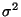
and proportions 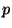.
Eachof these has a fairly standard statistic that is used to estimate it.
For means we have
or 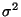
and proportions 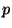.
Eachof these has a fairly standard statistic that is used to estimate it.
For means we have  ,
the sample mean; for standard deviations,
,
the sample mean; for standard deviations,  ,
the sample standard deviation; and for proportions ,
the sample proportion 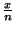,
where
,
the sample standard deviation; and for proportions ,
the sample proportion 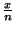,
where  is the number of items observed and 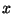
is the number of items observed of the characteristic of interest. Each
of these statistics is called an estimator for the corresponding
parameter; hence
is the number of items observed and 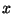
is the number of items observed of the characteristic of interest. Each
of these statistics is called an estimator for the corresponding
parameter; hence  is an estimator for
is an estimator for  ,
, is an estimator for
is an estimator for  and
is an estimator for .
In general if
and
is an estimator for .
In general if  (theta) stands for a parameter, (it is no harm to think of this as either 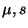
or),
then
(theta) stands for a parameter, (it is no harm to think of this as either 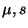
or),
then  will stand for an estimator for
will stand for an estimator for  .
Any particular value of an estimator is called a point estimate
for the corresponding parameter.
.
Any particular value of an estimator is called a point estimate
for the corresponding parameter.
In general, in statistics we do not use point estimates. There is no
confidence in a point estimate and in most cases the probability that a
point estimate is correct is zero. Rather interval estimates are
used. Interval estimates are ranges of numbers which hopefully contain
the parameter we are trying to estimate. For example if we are trying to
estimate the mean completion time for the surgical procedure of the last
section, 151 minutes would be a point estimate. A typical interval estimate
might be 143 to 159 minutes. In most cases we use a special type of interval
estimate called a confidence interval estimate or confidence
interval. We will give a formal definition below but roughly a confidence
interval estimate for a parameter is an interval estimate with a confidence
level attached. The confidence level gives the probability that the parameter
being estimated actually falls within the interval.
EXAMPLE Suppose that a 95% confidence interval for the mean completion
time of the surgical procedure is given by 143 minutes to 159 minutes.
This is interpreted in the following manner. The true mean completion time
is a number. There is a 95% probability that it falls in the interval 143
to 159.
Notice that in using a confidence interval estimate there are two concepts of how good this estimate is, confidence and accuracy. The confidence of the estimate is given by the confidence level while the accuracy is given by the width of the interval. A narrow interval indicates greater accuracy than a wider interval. On an intuitive level it is clear that these two ideas are inversely related, that is for fixed sample size raising the confidence lowers the accuracy and vice versa. We will see this computationally in section 5.4. However we note that if we want a given confidence and wish to improve the accuracy we must take a larger sample size. In the real world this translates into cost and often the sample size chosen is a compromise between what the theory requires and what the budget of the study dictates.
If  is a parameter for a population 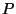
and
is a parameter for a population 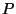
and  is an estimator for it, then as one goes from random sample to random sample
from
the values of
is an estimator for it, then as one goes from random sample to random sample
from
the values of  will vary. Hence
will vary. Hence  has its own distribution of values over all possible samples taken from
(we assume here the same sample size in each case). This is called the
sampling distribution of the estimator
has its own distribution of values over all possible samples taken from
(we assume here the same sample size in each case). This is called the
sampling distribution of the estimator  .
Hence for a given sample size
.
Hence for a given sample size  and a given population
with mean
and a given population
with mean  there will be a sampling distribution for
there will be a sampling distribution for  ,
consisting of all possible sample means of samples of size
,
consisting of all possible sample means of samples of size  drawn from .
Similarly there will be a sampling distribution for the sample standard
deviation
drawn from .
Similarly there will be a sampling distribution for the sample standard
deviation  and a sampling distribution for the sample proportion .
The sampling distribution of an estimator
and a sampling distribution for the sample proportion .
The sampling distribution of an estimator  will have its own mean and own standard deviation. We will denote these
by
will have its own mean and own standard deviation. We will denote these
by  and 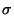.
and 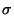.
We examine these ideas relative to sample means.
For any population with mean  and standard deviation
and standard deviation  the sample mean
the sample mean  is an unbiased estimator for
is an unbiased estimator for  .
This means that
.
This means that  where
where  is the mean of the sampling distribution of
is the mean of the sampling distribution of  .
Further the standard error of the mean is given by
.
Further the standard error of the mean is given by
EXAMPLE Suppose the discussed surgical procedure has a mean of  and a standard deviation of
and a standard deviation of  .
What is the mean and standard deviation of the sampling distribution of
.
What is the mean and standard deviation of the sampling distribution of  for samples of size 25.
for samples of size 25.
The mean of the sampling distribution is the same as the original mean. Therefore 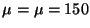. The standard deviation of the sampling distribution or the standard error is the original standard deviation divided by the squareroot of the sample size. Therefore
The idea of an estimator and its sampling distribution is used to give
a formal definition of a confidence interval. Suppose  is an estimator for
is an estimator for  and
and  are functions of
are functions of  with
with  for all values of
for all values of  .
Then 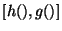
forms a random interval, that is an interval of numbers which arises
randomly. If for some value
.
Then 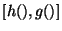
forms a random interval, that is an interval of numbers which arises
randomly. If for some value  we have that
we have that
Summarizing all this we have that an  -confidence
interval for a paramter
-confidence
interval for a paramter  is a random interval ,
where
is a random interval ,
where  is an estimator of
is an estimator of  and
and are functions of
are functions of  such that
such that
We now look at the particular case where the parameter of interest is
the population mean  and the estimator is the sample mean
and the estimator is the sample mean  .
The procedures used are separated into small and large sample procedures
because of the following result, called the Central Limit Theorem
which says that for large enough sample size the sampling distribution
of
from any parent population ( the population from which the sample is drawn)
is approximately normal.
.
The procedures used are separated into small and large sample procedures
because of the following result, called the Central Limit Theorem
which says that for large enough sample size the sampling distribution
of
from any parent population ( the population from which the sample is drawn)
is approximately normal.
Central Limit Theorem If  is sample mean for
is sample mean for  observations from any population
with mean
observations from any population
with mean  and finite standard deviation
and finite standard deviation  ,
then for"large" sample sizes
,
then for"large" sample sizes  ,
the sampling distribution of
,
the sampling distribution of  is approximately normal with mean
is approximately normal with mean  and standard deviation 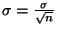.
and standard deviation 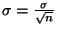.
The "large" in the theorem says that this is a limiting result. That is the theorem is true in the limit as the sample size goes to infinity. In practice generally the normal approximation is used when the sample size is 30 or greater (although if the parent population is very symmetrical itself the approximation works well at lower sample sizes). Therefore the cutoff between samll and large sample procedures is usually set at 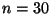.
We now turn to the problem of actually estimating a population mean  .
Recall that what we are looking for is a confidence interval estimate.
This means finding a random interval with a given probability of containing
the population mean. In terms of a general formula we are looking for a
random interval which contains the population mean a given proportion of
the time. The sample mean
.
Recall that what we are looking for is a confidence interval estimate.
This means finding a random interval with a given probability of containing
the population mean. In terms of a general formula we are looking for a
random interval which contains the population mean a given proportion of
the time. The sample mean  is an estimator for
is an estimator for  and we use the ideas concerning the sampling distribution of
and we use the ideas concerning the sampling distribution of together with the central limit theorem to construct large sample confidence
intervals for
together with the central limit theorem to construct large sample confidence
intervals for .
.
We suppose that
is a population with mean  and standard deviation
and standard deviation  and that we can choose a sample size
and that we can choose a sample size  large enough (at least 30) so that the central limit theorem applies. The
sampling distribution of
large enough (at least 30) so that the central limit theorem applies. The
sampling distribution of  is then approximately normal with
is then approximately normal with
From the normal distribution we have the following inequality on z-values
which occurs  %
of the time
%
of the time
The formula given above depends upon the population standard deviation  .
The following question arises. If we don't know
.
The following question arises. If we don't know  why would
why would  be known? In practice this is averted by using
be known? In practice this is averted by using  in place of
in place of  .
Usually for large samples, the sample standard deviation,
.
Usually for large samples, the sample standard deviation,  ,
is close enough to the population standard deviation
,
is close enough to the population standard deviation  ,
so that the estimate still has the required confidence. Using the ANALYSIS
OF THE VARIANCE TOOL we can build confidence intervals for standard deviations.
,
so that the estimate still has the required confidence. Using the ANALYSIS
OF THE VARIANCE TOOL we can build confidence intervals for standard deviations.
Large Sample Confidence Intervals for  If
is any population with mean
If
is any population with mean  then a large sample
then a large sample  %
confidence interval for
%
confidence interval for  is given by
is given by
Notice that the confidence interval has the format
The construction of these confidence interval estimates depends upon
determining the confidence coefficients so we first show how this is done.
EXAMPLE Determine the large sample 95% and 99% confidence coefficients.
The desired percentage 95% is centered on the mean so that 47.5% is on either side. Looking in the standard normal table for the entry .4750 we find that it corresponds to z = 1.96. Therefore z = 1.96 is the 95% large sample confidence coefficient. Again in MAGNUSSTAT this is done automatically and presented in the output box.
To find the 99% confidence coefficient we follow the same procedure. Draw a normal curve and place 99% centered on the mean. This gives 49.5% on either side and this is the value we look for in the normal table. We see that the required z-value is between z = 2.57 and z = 2.58. We will take the 99% confidence coefficient as z = 2.58.
Determining confidence interval estimates is then reduced to computing the required information and substituting in the given formula.
EXAMPLE A study was done to determine the mean completion time of a certain operation. A random sample of 64 such operations had a sample mean of 151 minutes with a sample standard deviation of 18 minutes. Determine 95% and 99% confidence interval estimates for the true mean completion time.
Here  so large sample procedures can be used. For 95% the confidence coefficient
is z = 1.96. The computed information is
so large sample procedures can be used. For 95% the confidence coefficient
is z = 1.96. The computed information is
A 95% confidence interval for the mean completion time is 146.59 minutes
to 155.41 minutes.
The second:
The mean completion time is 151 minutes with a 95% margin of sampling
error of 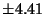
minutes.
To convert this into a 99% confidence interval, all that must be changed is the confidence coefficient. The coefficient for 99% was 2.58 so the computations must be redone with z = 2.58 rather than z = 1.96. Therefore here the confidence interval estimate is
A 99% confidence interval for the mean completion time is 145.19 minutes
to 156.81 minutes.
or
The mean completion time is 151 minutes with a 99% margin of sampling
error of 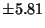
minutes.
As expected the 99% interval is wider ( the error is larger) and hence
less accurate.
Suppose that in the previous example the error in the 95% estimate of minutes is too large and it is desired to improve the accuracy to an error of 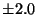 minutes. If the 95% confidence level is maintained the only way this could be done is to increase the sample size. The question is how large large a sample is needed.
From before we have that the error is given by
Now we do the same computations in terms of symbols to get a general formula. We have that
Determination of Appropriate Sample Size To get a desired error of
in the determination of the sample mean  for a confidence level of
for a confidence level of  the appropriate sample size is given by
the appropriate sample size is given by
What is sometimes done in practice is that a pilot study is conducted
to get a value of  and this is then used in the above formula.
and this is then used in the above formula.
The techniques that we have examined so far depend upon being able to draw a large enough sample so that the central limit theorem can be used. In many situations though, it is impractical or impossible to draw a large sample. Two very common testing situations where it is difficult, if not impossible, to draw large samples are in destructive testing and more importantly for nurses and other health care professionals, medical testing. Destructive testing refers to statistical testing where the sample is destroyed or made unusable by the test. For example in testing the breaking strength of a steel rod the rod must be broken. Similarly a disposable syringe cannot be reused. Because of the costs involved we are most times restricted to relatively small samples. In medical testing we are also in many cases restricted to smaller samples. Ultimately testing must be done on human subjects and this cannot always be done with enough subjects to apply large sample techniques. Because of this, bias questions often arise in medical testing. Human subjects are frequently obtained by paying people. However the population of people who would subject themselves to some sort of medical test for payment is not the same as the general population. We must be aware of this in evaluating many medical findings.
To handle estimation and other inference procedures concerning means
when large samples cannot be drawn, we must deal with parent populations
that are themselves normal or at least not too skewed. If this is not a
viable assumption then very little can be done. Hence we will assume that
our parent population is normal with mean  .
The estimation of
.
The estimation of  proceeds by using another continuous distribution which is very similar
to a standard normal distribution.
proceeds by using another continuous distribution which is very similar
to a standard normal distribution.
If  is a positive integer a t-distribution with n degrees of freedom
is a continuous distribution whose density curve has the equation
is a positive integer a t-distribution with n degrees of freedom
is a continuous distribution whose density curve has the equation
Here so large sample procedures cannot be used. Assuming that the mean time follows a normal distribution we can apply the small sample procedure. First we must find the 95% t confidence coefficient. Since a 95% interval will leave a total of 5% in the tails there is 2.5% in each tail. There are 16 observations so 15 d.f. Therefore the appropriate t-confidence coefficient is
A 95% confidence interval for the mean time to tolerate solid food is
5.56 days to 6.84 days